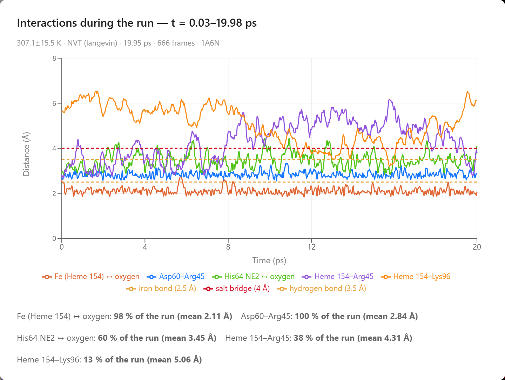
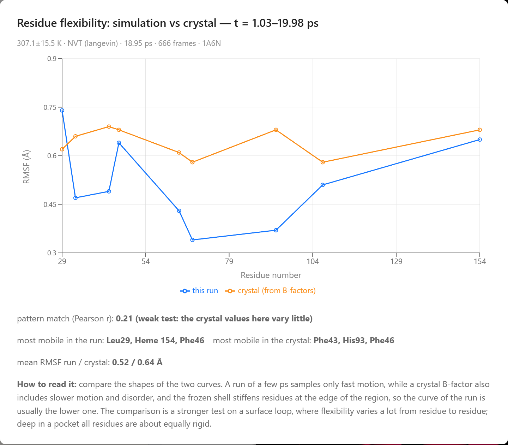

Simulating a Binding Site: Oxygen in Myoglobin
Localized molecular dynamics moves only the atoms around a bound molecule, so a student can watch oxygen bind the heme iron of myoglobin in a browser.
Most drugs work by binding to a protein. A small molecule, called the ligand, fits into a pocket of the protein and is held there by hydrogen bonds, attractions between charges, and contact with the oily side chains that line the pocket. A program that predicts how a ligand fits into a pocket is called a docking program. It tries many positions and orientations of the ligand against a fixed structure of the protein and scores each one. The result is a single picture of the ligand in the pocket. A protein at body temperature moves all the time: its side chains swing, its loops flex, and the ligand rocks in its pocket. Some contacts in the docked picture last, and others form and break within a few trillionths of a second. Molecular dynamics follows this motion by computing the force on every atom and moving each atom by Newton’s laws in steps of about one femtosecond (10−15 s). McCammon, Gelin, and Karplus published the first molecular dynamics simulation of a protein in 1977.
A whole protein in a box of water has tens of thousands of atoms, which is too many to simulate in a browser at an interactive speed. A binding study, however, needs only the part of the protein around the ligand. Brooks, Brünger, and Karplus described this approach in 1985 for the active site of an enzyme: the atoms near the site move freely, the atoms around them are held near their positions, and the rest of the protein is left out of the calculation. AIMS uses a similar approach, which this article calls localized molecular dynamics. It runs in the Protein Lab of AIMS, in the browser, and this article follows it through one example: oxygen binding to myoglobin.
Sperm whale myoglobin (PDB 1A6N) with a molecule of oxygen docked beside its heme. Press Simulate the binding site on the Ligand card in the chat to run the localized simulation described below.
Myoglobin and Its Heme
Try It
Go to AIMS and open the list of examples, with the lightbulb button on the toolbar or the Examples item in the main menu (☰). Open Myoglobin and Oxygen, open the chat, and type the prompts below. The chat in the example already holds the answers to these prompts, which the sections below describe.
- The tour — “Give me a tour of this protein.”
- The annotations — “What does UniProt say about it? Annotate the structure.”
- Docking — “Add an oxygen molecule where myoglobin binds it, dock it, and tell me which residues hold it.”
- The simulation — “Simulate the binding site at body temperature. Does the oxygen bind the iron, and how does the pocket move?”
Runs differ. Whether the oxygen reaches the iron within 20 ps differs from run to run, so your own run may take longer, or the oxygen may leave the pocket.
Myoglobin stores oxygen in muscle. It was the first protein whose three-dimensional structure was determined, by Kendrew and coworkers in 1958. It is one chain of about 150 amino acids folded into eight α-helices, labeled A to H, wrapped around a heme. The heme is a flat ring of carbon and nitrogen atoms, called a porphyrin, with an iron atom at its center held by four nitrogen atoms of the ring. A fifth bond holds the iron to the protein from below, through a histidine on helix F (His93, the proximal histidine). Oxygen binds the iron on the other face of the heme, in a pocket next to a second histidine on helix E (His64, the distal histidine). Phillips and Schoenborn showed in 1981, by neutron diffraction, that His64 forms a hydrogen bond to the bound oxygen. This hydrogen bond helps hold the oxygen on the iron.
The example uses the structure of sperm whale myoglobin without oxygen, the deoxy form, determined at a resolution of 1.15 Å by Vojtěchovský, Chu, Berendzen, Sweet, and Schlichting in 1999 (PDB 1A6N). In this form, a water molecule sits in the pocket above the iron. The first two prompts give a tour of the structure and map the features recorded for myoglobin in the UniProt database onto it. The third prompt adds a molecule of oxygen beside the heme and docks it. The docked pose has no clashes, the docking score counts two hydrogen bonds, the better of them to His64, and the pocket around the oxygen is lined by Leu29, Leu32, Phe43, Val68, His93, and Ile107. The docking score treats oxygen as an ordinary small molecule, so it has no term for the bond between oxygen and iron. A simulation that models this bond can show whether the oxygen binds the iron.
Three Zones
The three zones of the simulated region. The ligand (red) and every residue within 6 Å of it move freely. A layer 3 Å wide is held by springs that stiffen toward the outside. A shell 6 Å wide is fixed, and the rest of the protein is left out of the calculation.
The fourth prompt runs the localized simulation. AIMS builds the simulated region from residues: a residue joins a zone when any of its atoms is within that zone’s distance of the ligand. The free core holds the ligand and every residue within 6 Å of it. Around the core is a buffer 3 Å wide, whose atoms move but are pulled back toward their starting positions by springs. The springs are weakest at the inner edge of the buffer and ten times stiffer at its outer edge, so the restraint on the atoms increases gradually from the core to the frozen shell. Around the buffer is a frozen shell 6 Å wide, whose atoms stay fixed. The shell exerts on the moving atoms the forces of the protein that surrounds them. In the myoglobin example, 318 atoms move.
Water is represented implicitly. Water weakens the attraction between charges, and it weakens it more the farther apart the charges are, because more water fits between them. The simulation divides the electrostatic energy of two charges by a dielectric constant that depends on their distance, following Mehler and Solmajer: about 13 at 2.9 Å, the distance across a salt bridge, about 57 at 10 Å, and close to 78, the value for bulk water, beyond 20 Å. It also adds the energy cost of moving a charged or polar group out of water and the energy gain of burying an oily group, from the solvation model of Lazaridis and Karplus. Crystal waters stay in the structure, except those that overlap the docked ligand. In the example, the oxygen sits where the crystal water of the deoxy form was, so that water is removed. A thermostat holds the region at 310 K, body temperature, by adding small random forces and a matching friction to every moving atom.
Hydrogen Atoms
Hydrogen makes up about half of the atoms in a protein. The simulation treats the hydrogen atoms in two ways. The hydrogen atoms bonded to nitrogen, oxygen, and sulfur are called polar hydrogens. A polar hydrogen carries a partial positive charge, which attracts the negative charge on the atom that accepts the hydrogen bond, so the polar hydrogens are simulated as atoms of their own: a hydrogen bond between His64 and the oxygen is a contact between a hydrogen on His64 and an oxygen atom, with the direction that a real hydrogen bond has. The hydrogen atoms bonded to carbon are folded into their carbon atoms. A CH3 group, for example, moves as one particle with the mass of the whole group and the size of the whole group. This approach is called a united-atom model. It removes most of the hydrogen atoms from the calculation and keeps the charges that matter for binding. The Add hydrogens switch in the experimental settings draws these hydrogen atoms on the moving carbon atoms, at a C–H bond length of 1.09 Å and at tetrahedral angles, so the picture shows every atom of the moving region.
The fastest motion in the region is the stretching of a bond to a hydrogen atom, and it limits the time step. The simulation moves some mass from each heavy atom onto the hydrogen atoms bonded to it, which slows that motion without changing the total mass or the forces, a method described by Feenstra, Hess, and Berendsen. This allows a time step of 1.5 fs. The calculation runs in a separate thread of the browser, so the lab stays responsive while the atoms move.
The Iron
A bond that can break. The energy of the iron and a ligand oxygen atom has a minimum at 1.8 Å and levels off at long distance, so the ligand can bind the iron and leave it again.
Most force fields for proteins describe a chemical bond as a spring, which cannot break. A binding study of myoglobin needs the iron, and it needs a bond between the iron and the oxygen that can form and break during the run. In the simulation, the iron is bonded to the four nitrogen atoms of the porphyrin and to His93, at their distances in the crystal. Between the iron and each atom of the ligand that can bind it (a nitrogen, oxygen, or sulfur atom, or the carbon of carbon monoxide), the energy follows a Morse potential. A Morse potential rises steeply when two atoms are pushed together, has a minimum at the bond length, and levels off at long distance, where the bond is broken. For oxygen the minimum is at 1.8 Å with a depth of 14 kcal/mol. The depth is an illustrative value chosen to show binding.
The iron binds one ligand atom at a time. The simulation combines the Morse potentials of the two oxygen atoms with a smooth minimum, a function that follows whichever atom is closer to the iron and changes over smoothly when the two are about equally close. The oxygen therefore binds end-on, through one atom, as it does in oxymyoglobin. A bending term holds the Fe–O–O angle near 120°, the bent geometry of oxygen bound to a heme. This term is weighted by how strongly the oxygen is bound, so it has no effect when the oxygen is away from the iron. The two carboxylate groups of the heme, called propionates, each carry a charge of −1, and the lysine and arginine side chains spread their positive charge over several atoms, as they do in standard protein force fields.
What the Simulation Showed
The simulation first relaxes the region for up to 150 steps of energy minimization, which removes strain from the starting structure, and then gives every moving atom a random velocity drawn for 310 K. In the run saved in the example, the region ran for 20 ps at an average of 307 K. The oxygen bound the iron and stayed bound for 98 % of the run, end-on, at an average distance of 2.1 Å between the iron and the nearer oxygen atom. The simulation counts the oxygen as bound when this distance is below 2.5 Å. The distal histidine, His64, carries a hydrogen atom on its NE2 nitrogen, and it formed a hydrogen bond with the oxygen through this nitrogen for 60 % of the run. A hydrogen bond is counted when the nitrogen carries a hydrogen atom and the nitrogen and the oxygen are within 3.5 Å of each other. These two contacts, to the iron and to His64, are the two that the crystal structure of oxymyoglobin and the neutron diffraction study describe.
The Interactions card in the answer plots the distance of every contact against time. Besides the contacts to the oxygen, it follows three salt bridges near the pocket. Arg45 paired with Asp60 for the whole run and with a propionate of the heme for 38 % of it, and Lys96 paired with a propionate of the heme for 13 % of it. A salt bridge is counted when an oxygen atom of the carboxylate group is within 4.0 Å of a nitrogen atom of the arginine or the lysine. The two bridges to the heme broke and formed again during the run.

The Interactions card: the distance of each contact against time. The dashed lines mark the distances below which an iron bond (2.5 Å), a hydrogen bond (3.5 Å), and a salt bridge (4 Å) are counted.
The Flexibility card compares how much the heme and each of the eight residues in the free core moved with the crystal. A crystal structure records, for each atom, a B-factor, a measure of how much the atom’s position varies across the crystal. The card converts the B-factors to the root-mean-square fluctuation (RMSF), the average distance of an atom from its mean position, and compares them with the RMSF in the run, computed after the first picosecond. The averages are close: 0.52 Å in the run and 0.64 Å in the crystal. The pattern from residue to residue matches weakly, with a correlation coefficient r of 0.21. In the run, Leu29, the heme, and Phe46 moved most; in the crystal, Phe43, His93, and Phe46 have the largest B-factors. The residues deep in a pocket all have similar B-factors in the crystal, so the comparison is a weak test here; it is a stronger test on a surface loop, where flexibility varies more from residue to residue.

The Flexibility card: the RMSF of the heme (154) and of each residue of the free core in the run (blue) and from the crystal B-factors (orange).
The Reach of a Localized Simulation
A localized simulation shows the contacts between a ligand and its pocket at body temperature: which hydrogen bonds last and which form and break, how far a ligand moves in its pocket, whether it binds a metal, and how the side chains around it move in response. The run lasts tens of picoseconds. Whether the oxygen reaches the iron in that time depends on the random velocities and the random forces of the thermostat, so the oxygen binds in one run and stays unbound in another. Slower events, such as the escape of oxygen from myoglobin or the opening of a loop that covers a pocket, take nanoseconds or longer, far longer than a run. The frozen shell keeps the region near the crystal structure, so a large change in the shape of the protein cannot happen. The bond between the iron and the oxygen is a classical model. In real oxymyoglobin, binding moves electron density from the iron to the oxygen and changes the spin state of the iron, which only a quantum-mechanical calculation describes. The depth of the Morse potential is illustrative, so the simulation does not compute binding energies. The model shows the geometry of binding: the oxygen reaches the iron, binds it end-on, and forms a hydrogen bond with His64.
The same steps work for other ligands in other proteins. A student can add a ligand by name to any structure in the Protein Lab, dock it into a pocket, and simulate the pocket around it. The Report button on the control bar posts the Interactions and Flexibility cards for the student’s own run. The prompt “add carbon monoxide beside the heme and dock it” sets up a comparison with oxygen: carbon monoxide binds the iron through its carbon atom, and the simulation holds it in a straight line with the iron.
Conclusion
What the Simulation Produced
The simulation was given the crystal structure of deoxymyoglobin, a docked oxygen molecule, and a bond to the iron that can form and break. The results below came out of the run:
- Binding — the oxygen bound the iron end-on for 98 % of a 20 ps run at 310 K, at an average distance of 2.1 Å.
- The distal histidine — His64 formed a hydrogen bond with the oxygen through its NE2 nitrogen for 60 % of the run.
- Salt bridges — Arg45 paired with Asp60 for the whole run and with a heme propionate for 38 % of it, and Lys96 paired with a heme propionate for 13 % of it.
- Flexibility — a mean RMSF of 0.52 Å in the run against 0.64 Å from the crystal B-factors, with Leu29 the most mobile residue in the run.
This article uses the binding of oxygen to myoglobin to illustrate a new way to learn science: students converse with an AI agent that turns a plain-language question into a molecular dynamics experiment and hands back measured data. The textbook picture of myoglobin, an iron that holds oxygen end-on with a histidine beside it, becomes something students watch form in a simulation they ran themselves, with each contact measured as a fraction of the run.
Setting up this experiment by hand takes skills that few students have. Someone has to add hydrogen atoms to a crystal structure, assign charges, choose the residues to move and the residues to hold, model a metal bond that can break, run the simulation with a thermostat, and write the code that counts contacts and compares fluctuations with B-factors. In research this means a simulation package, input files, and analysis scripts, and it takes training in the methods. In AIMS a student types four questions in plain language, and the agent docks the ligand, runs the simulation, measures it, and posts the charts in the conversation, where the student can check the results, repeat the run, and try another ligand. By pairing a physically grounded simulation with an AI that can set it up and run it, AIMS turns a student’s curiosity into a genuine scientific investigation of how a protein holds the molecule it binds.
← Back to AIMS